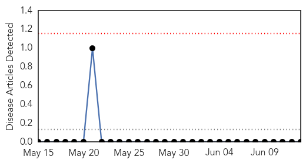

Chikungunya
30-Day Web Trend
8 alerts, 5 warnings

30-Day Twitter Trend
1 alerts, 0 warnings

Article Locations
Article Confidences
Top Articles:
- 0.999
- Chikungunya Cases Popping Up Around US, According to CDC
- 0.998
- Patient did not die from Chikungunya virus
- 0.997
- First chikungunya case confirmed in Tennessee
- 0.997
- Chikungunya Fever Spreading in Tennessee
- 0.994
- NC reports first case of mosquito-borne chikungunya virus :: WRAL.com
- 0.994
- First Case Of Chikungunya Confirmed In Forsyth County
- 0.993
- State confirms first case of chikungunya in TN
- 0.993
- 1st Chikungunya case confirmed in US Virgin Islands
- 0.992
- Providence, RI and New Bedford, MA News, Weather
- 0.982
- CDC issues warnings about mosquito-borne virus Chikungunya spreading across the US
- 0.948
- 'Chikungunya' Mosquito Virus Appears in NC
- 0.900
- The Reporter Newspaper – Dominica battles Chikungunya disease
- 0.893
- Dominicans deny Chikungunya is caused by mosquitoes
- 0.885
- 2 cases of chikungunya virus confirmed in travelers from Dominican Republic
Top Tweets:
-
No tweets found for Jun 13, 2014
Hemmorhagic Fever
30-Day Web Trend
0 alerts, 0 warnings

30-Day Twitter Trend
0 alerts, 0 warnings

Article Locations

Article Confidences

Top Articles:
-
No articles found for Jun 13, 2014
Top Tweets:
-
No tweets found for Jun 13, 2014